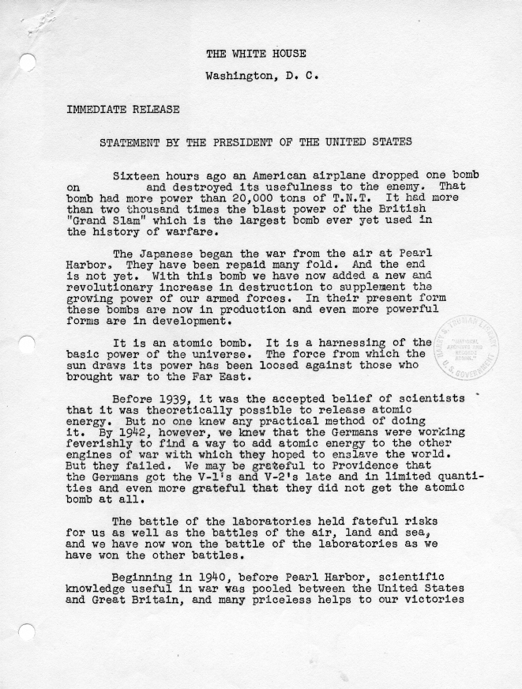
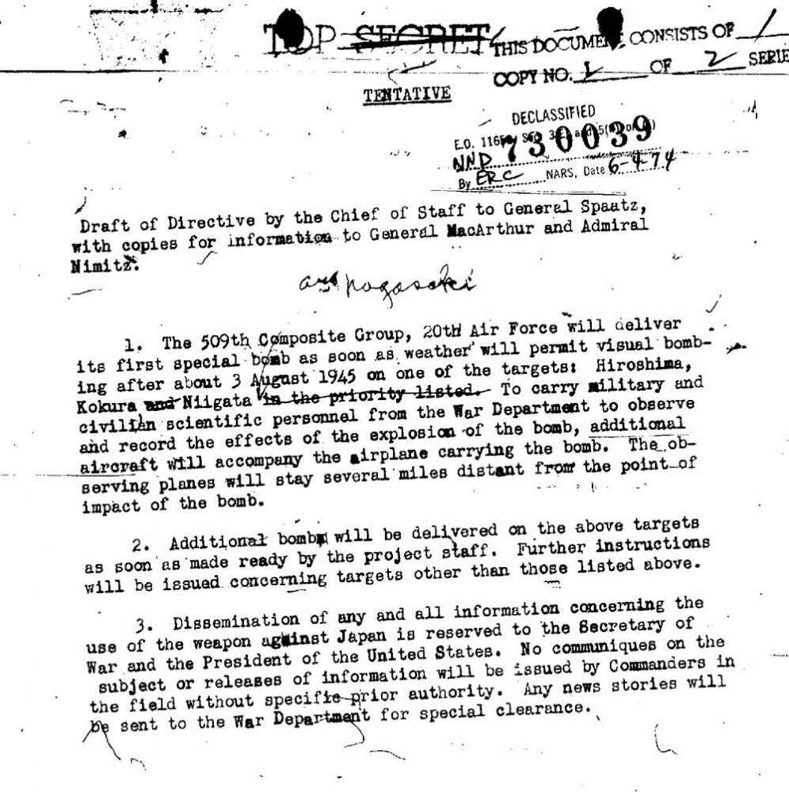
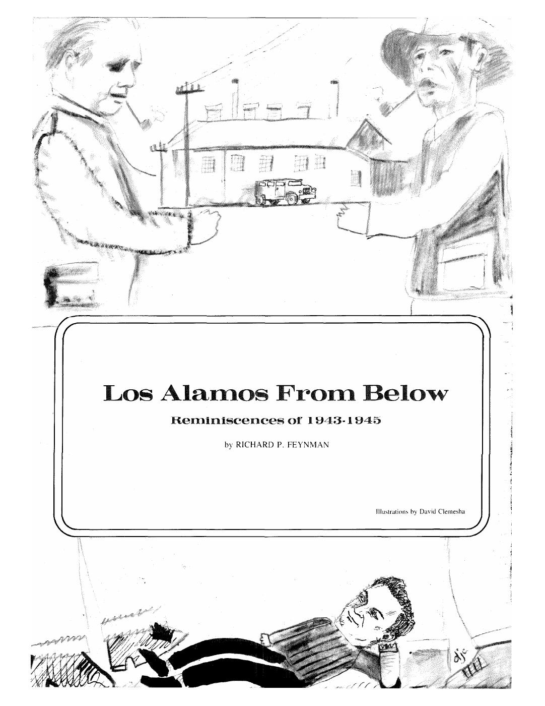
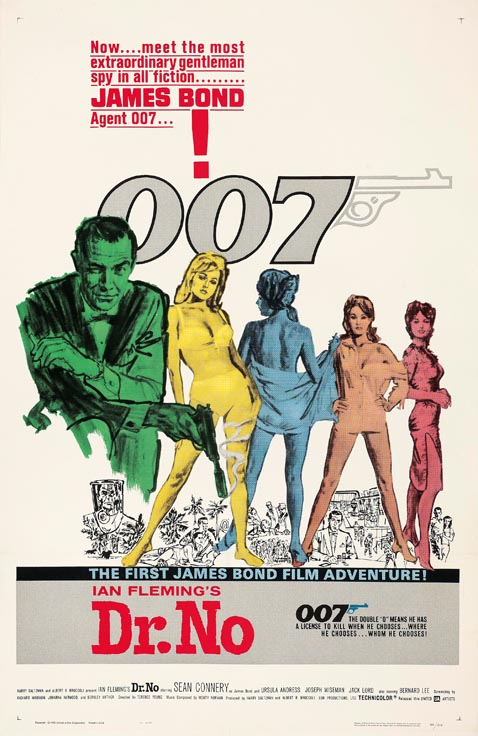
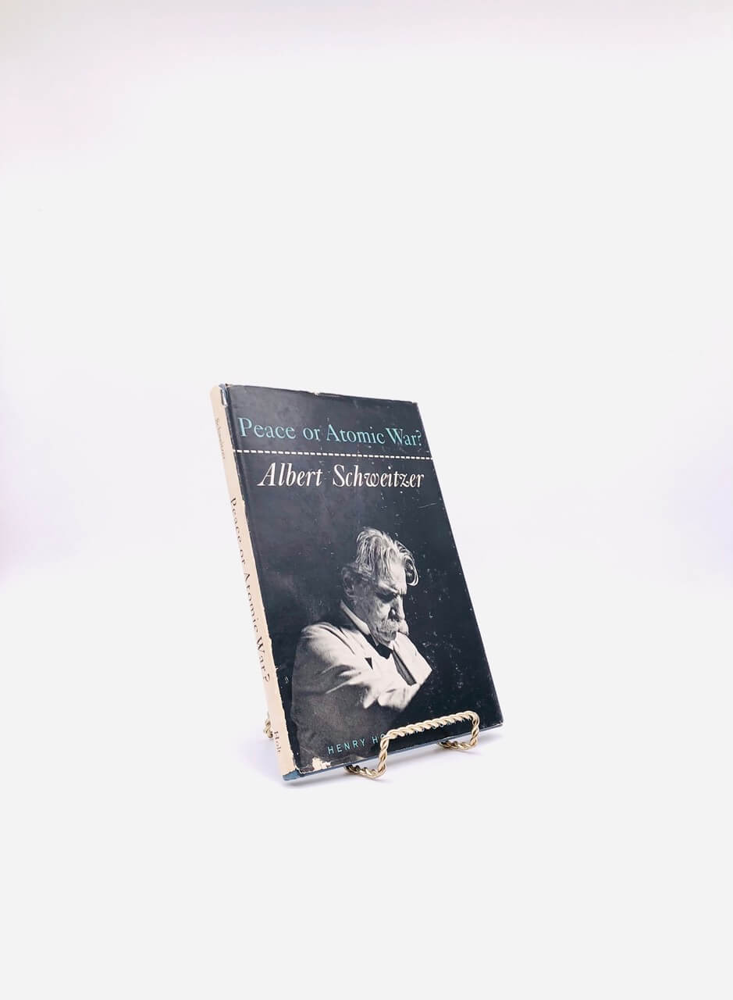

1:19:33 · 13 OPERE
L'uso dell'atomica. Provare a riflettere sull'orrore della guerra nucleare.
Il filo del discorso
La riflessione di Dr Divago sull’atomica segue un percorso che va dai documenti della seconda guerra mondiale alle testimonianze dei sopravvissuti, per interrogare il rapporto fra potenza tecnica e responsabilità morale. Hiroshima Notes di Kenzaburō Ōe costituisce uno dei testi portanti: la memoria delle vittime si oppone alla riduzione della guerra a conteggio di obiettivi e risultati. Il relatore denuncia l’assuefazione alla possibilità di distruggere intere popolazioni e invita a riconoscere persone e vite dietro le immagini del disastro. La prima parte ricorda la lettera Einstein–Szilárd a Roosevelt, Trinity e i bombardamenti del 6 e 9 agosto 1945. Le scelte dei bersagli e le differenze fra gli ordigni alimentano l’interpretazione del relatore secondo cui l’uso delle bombe fu anche un esperimento e una dimostrazione di potere. Questa tesi non esaurisce un dibattito storico che richiede il confronto fra documenti e decisioni differenti. Alcune ricostruzioni tecniche e cronologiche sono inesatte: gli incidenti del Demon Core seguirono Nagasaki e non riguardarono il nucleo già impiegato in quella bomba; la potenza del test sovietico Tsar Bomba non rappresenta quella di tutte le testate moderne. Le fotografie attribuite a Matsushige e Yamahata, gli oggetti superstiti e le pagine di Ōe spostano il discorso sulla dignità, sulla sofferenza e sul compito del testimone. Yamahata fotografò Nagasaki il giorno successivo all’esplosione; Sakai, tedoforo a Tokyo nel 1964, era nato a Miyoshi nella prefettura di Hiroshima. Non si possono ricavare l’identità, la sorte o una prognosi delle persone dalle sole immagini. Anche una fotografia di presunte ombre di bambini viene discussa dal relatore senza una provenienza verificabile: non è acquisita come documento autentico del bombardamento. Dr Divago contrappone il linguaggio del comunicato di Truman all’esperienza dei civili, quindi legge una bozza di direttiva con l’aggiunta manoscritta di Nagasaki. La presenza di installazioni militari a Hiroshima e la vastissima distruzione della popolazione civile sono elementi compatibili, che la narrazione pubblica deve tenere insieme. La corrispondenza Anders–Eatherly, le poesie di David Krieger e il ricordo autobiografico di Feynman introducono il problema della coscienza dopo la partecipazione alla ricerca o alle operazioni militari. Il percorso successivo intreccia gli esperimenti di Bikini, il fallout e la cultura di massa. Il relatore interpreta nomi di bombe, costumi e film come modi di rendere familiare la distruzione; è una lettura culturale, non una prova di coordinamento occulto dell’industria cinematografica. Crossroads del 1946, Ivy Mike del 1952 e Castle Bravo del 1954 vanno distinti. La conclusione richiama il Manifesto Russell–Einstein e gli appelli di Schweitzer, chiedendo di trasformare la memoria in responsabilità per il futuro. Il rifiuto della guerra emerge come esigenza etica, mentre dati, citazioni e nessi storici restano soggetti a verifica.
I libri nel discorso
Hiroshima Notes
Copertina: Copertina dell’edizione inglese Grove Press 1996, traduzione David L. Swain e Toshi Yonezawa, ISBN 9780802134646. Edizione successiva all’originale giapponese 1965.
Immagine autentica dell’opera indicata; esemplare o immagine proiettata in video non confermati mediante visione della registrazione.
riconoscimento_vocale_locale
Passaggio 0:52 ↗ · Fonti e libro ↗
Lettera a Franklin D. Roosevelt del 2 agosto 1939
Prima pagina della lettera: Lettera del 2 agosto 1939; prima pagina riprodotta nel dossier didattico della FDR Presidential Library, p. 123 del PDF.
Riproduzione autentica della prima pagina della lettera, con intestazione e apparato del dossier didattico FDR Library. Rasterizzazione integrale della sola pagina 123 a 1400 pixel massimi; non è una copertina né l’intero documento. La risposta di Roosevelt appartiene a un documento distinto e successivo. Nessuna edizione o copia visibile nel filmato è stata identificata.
riconoscimento_vocale_locale
Passaggio 2:03 ↗ · Fonti e libro ↗
Statement by the President Announcing the Use of the A-Bomb at Hiroshima
Copertina: Facsimile della prima pagina del comunicato della Casa Bianca del 6 agosto 1945, con spazio del bersaglio lasciato in bianco; copia didattica USC da Thomas W. Ayers Papers, Truman Library. Pagina documentaria, non copertina libraria.
Immagine autentica dell’opera indicata; esemplare o immagine proiettata in video non confermati mediante visione della registrazione.
riconoscimento_vocale_locale
Passaggio 27:02 ↗ · Fonti e libro ↗
Draft of Directive by the Chief of Staff to General Spaatz
Identificazione probabile
Copertina: Facsimile della bozza di direttiva del 24 luglio 1945, Groves Papers, National Archives, Record Group 77, riprodotta nell’analisi documentaria di Alex Wellerstein. Non direttiva finale del 25 luglio.
Immagine autentica dell’opera indicata; esemplare o immagine proiettata in video non confermati mediante visione della registrazione.
riconoscimento_vocale_locale
Passaggio 38:49 ↗ · Fonti e libro ↗
Il pilota di Hiroshima, ovvero: la coscienza al bando / Burning Conscience
Identificazione probabile
Frontespizio con ritratto, edizione americana1962: Frontespizio con ritratto, non copertina esterna, da Burning Conscience, Monthly Review Press, New York1962, prima edizione americana; originale tedesco Off limits für das Gewissen1961. La seconda pagina della scansione conferma le date. Distinto dal volume italiano Linea d’Ombra1992, traduzione Renato Solmi.
Prima apertura della scansione universitaria, con ritratto a sinistra e frontespizio a destra. Non copertina esterna e non edizione italiana. PDF integrale conservato privatamente.
riconoscimento_vocale_locale
Passaggio 42:18 ↗ · Fonti e libro ↗
Los Alamos from Below: Reminiscences of 1943–1945
Identificazione probabile
Copertina: Prima pagina del contributo Los Alamos from Below in Engineering and Science 39/2, 1976; facsimile Caltech, non copertina di un libro.
Immagine autentica dell’opera indicata; esemplare o immagine proiettata in video non confermati mediante visione della registrazione.
riconoscimento_vocale_locale
Passaggio 46:21 ↗ · Fonti e libro ↗Gilda
Copertina: Grafica promozionale digitale ufficiale Sony Pictures del film Gilda (1946); non locandina originale garantita del 1946.
Immagine autentica dell’opera indicata; esemplare o immagine proiettata in video non confermati mediante visione della registrazione.
riconoscimento_vocale_locale
Passaggio 53:10 ↗ · Fonti e libro ↗
Vangelo secondo Luca
Identificazione probabile
Copertina del volume completo: San Paolo, 2014 · Nuova Versione dai Testi Antichi · edizione di riferimento
Vangelo secondo Luca è un libro della Bibbia. L’immagine mostra il volume completo San Paolo di riferimento, non un’edizione autonoma del singolo libro e non una versione identificata nella citazione.
riconoscimento_vocale_locale
Passaggio 1:01:09 ↗ · Fonti e libro ↗
Dr. No
Copertina: Manifesto cinematografico statunitense originale Dr. No (1962), Mitchell Hooks e David Chasman, United Artists, riprodotto da Christie’s.
Immagine autentica dell’opera indicata; esemplare o immagine proiettata in video non confermati mediante visione della registrazione.
riconoscimento_vocale_locale
Passaggio 1:06:20 ↗ · Fonti e libro ↗Dr. Goldfoot and the Bikini Machine
Copertina: Copertina della pubblicazione Blu-ray Kino Lorber 2015 del film Dr. Goldfoot and the Bikini Machine (1965); supporto successivo dichiarato.
Immagine autentica dell’opera indicata; esemplare o immagine proiettata in video non confermati mediante visione della registrazione.
riconoscimento_vocale_locale
Passaggio 1:07:01 ↗ · Fonti e libro ↗
Dr. Strangelove or: How I Learned to Stop Worrying and Love the Bomb / Il dottor Stranamore
Copertina: Sony Pictures · key art digitale del film del 1964
Key art autentico completo dal file originale 1400×2100 collegato alla pagina ufficiale Sony Pictures. Sono leggibili titolo e sottotitolo; immagine di Peter Sellers e sala di comando. Materiale promozionale digitale attuale, senza attribuirlo a una specifica tiratura di manifesto del 1964 o a una copertina libraria.
riconoscimento_vocale_locale
Passaggio 1:07:21 ↗ · Fonti e libro ↗
Manifesto Russell–Einstein
Fotografia della presentazione del manifesto nel 1955: Pugwash · documento del 9 luglio 1955 · fotografia della presentazione alla stampa
Fotografia della conferenza stampa del 1955 pubblicata da Pugwash a corredo della storia del manifesto. È un’illustrazione documentaria, non una copertina né una pagina del testo.
riconoscimento_vocale_locale
Passaggio 1:08:53 ↗ · Fonti e libro ↗
Peace or Atomic War?
Identificazione probabile
Copertina: Fotografia della sovraccoperta originale Peace or Atomic War?, Henry Holt and Company, New York 1958.
Immagine autentica dell’opera indicata; esemplare o immagine proiettata in video non confermati mediante visione della registrazione.
riconoscimento_vocale_locale
Passaggio 1:11:28 ↗ · Fonti e libro ↗